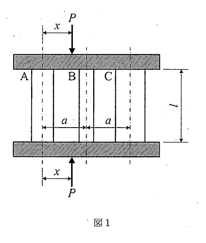

問題概要
2021年度の材料力学入試では、大問【1】で3本の丸棒による並列支持問題（不静定問題とせん断破壊）、大問【2】で段付はりのたわみ問題（複雑な分布荷重）が出題されました。不静定構造の解析とはりの変形解析が重要なテーマとなりました。
問題PDFをダウンロード (2021年度) 解答PDFをダウンロード (2021年度)大問【1】3本の丸棒による並列支持問題
長さlの3本の丸棒A、B、Cが上下から剛体板で挟まれ、その剛体板に外力Pが作用している。丸棒の中心は互いにaだけ離れており、外力Pによってすべての丸棒は等しく縮むものとする。丸棒A、B、Cの縦弾性係数および断面積は、それぞれ順にE₁、E₂、E₃およびA₁、A₂、A₃とする。

図1：問題1の説明図
考え方のヒント
この問題は不静定問題です。力のつり合い式だけでは解けないため、変形の適合条件（すべての丸棒が等しく縮む）を利用します。各丸棒の剛性を考慮した力の分配が重要です。
途中式と解答
(1) 丸棒の縮みδを求めよ
考え方：
すべての丸棒が等しく縮むため、各丸棒の縮みは同じδです。フックの法則により、各丸棒の力は剛性×縮みで表されます。 剛性の定義：
各丸棒の剛性を\(k_i = \frac{E_i A_i}{l}\)と定義すると、各丸棒に作用する力は： - \(F_A = k_A \delta = \frac{E_1 A_1}{l} \delta\) - \(F_B = k_B \delta = \frac{E_2 A_2}{l} \delta\) - \(F_C = k_C \delta = \frac{E_3 A_3}{l} \delta\) 力のつり合い：
$$F_A + F_B + F_C = P$$ $$(k_A + k_B + k_C)\delta = P$$ $$\delta = \frac{P}{k_A + k_B + k_C} = \frac{Pl}{E_1 A_1 + E_2 A_2 + E_3 A_3}$$
答え: \(\delta = \frac{Pl}{E_1 A_1 + E_2 A_2 + E_3 A_3}\)
すべての丸棒が等しく縮むため、各丸棒の縮みは同じδです。フックの法則により、各丸棒の力は剛性×縮みで表されます。 剛性の定義：
各丸棒の剛性を\(k_i = \frac{E_i A_i}{l}\)と定義すると、各丸棒に作用する力は： - \(F_A = k_A \delta = \frac{E_1 A_1}{l} \delta\) - \(F_B = k_B \delta = \frac{E_2 A_2}{l} \delta\) - \(F_C = k_C \delta = \frac{E_3 A_3}{l} \delta\) 力のつり合い：
$$F_A + F_B + F_C = P$$ $$(k_A + k_B + k_C)\delta = P$$ $$\delta = \frac{P}{k_A + k_B + k_C} = \frac{Pl}{E_1 A_1 + E_2 A_2 + E_3 A_3}$$
(2) 外力Pを作用させた位置xを求めよ
考え方：
外力Pの作用位置は、モーメントのつり合いから決まります。丸棒Aを基準点として、モーメントのつり合いを考えます。 モーメントのつり合い（点A基準）：
丸棒Bの位置：Aからa
丸棒Cの位置：Aから2a
外力Pの位置：Aからx $$F_B \cdot a + F_C \cdot 2a = P \cdot x$$ \(F_i = k_i \delta\)を代入： $$k_B \delta \cdot a + k_C \delta \cdot 2a = P \cdot x$$ $$\delta a (k_B + 2k_C) = P \cdot x$$ (1)の結果を代入： $$x = \frac{\delta a (k_B + 2k_C)}{P} = \frac{a(k_B + 2k_C)}{k_A + k_B + k_C}$$ $$x = a \frac{E_2 A_2 + 2E_3 A_3}{E_1 A_1 + E_2 A_2 + E_3 A_3}$$
答え: \(x = a \frac{E_2 A_2 + 2E_3 A_3}{E_1 A_1 + E_2 A_2 + E_3 A_3}\)
外力Pの作用位置は、モーメントのつり合いから決まります。丸棒Aを基準点として、モーメントのつり合いを考えます。 モーメントのつり合い（点A基準）：
丸棒Bの位置：Aからa
丸棒Cの位置：Aから2a
外力Pの位置：Aからx $$F_B \cdot a + F_C \cdot 2a = P \cdot x$$ \(F_i = k_i \delta\)を代入： $$k_B \delta \cdot a + k_C \delta \cdot 2a = P \cdot x$$ $$\delta a (k_B + 2k_C) = P \cdot x$$ (1)の結果を代入： $$x = \frac{\delta a (k_B + 2k_C)}{P} = \frac{a(k_B + 2k_C)}{k_A + k_B + k_C}$$ $$x = a \frac{E_2 A_2 + 2E_3 A_3}{E_1 A_1 + E_2 A_2 + E_3 A_3}$$
(3) 破壊したときの外力P_maxを求めよ
考え方：
丸棒Aがせん断破壊する条件を考えます。一軸応力状態では、最大せん断応力は主応力の半分となります。 破壊条件：
丸棒Aの圧縮応力：\(\sigma = \frac{F_A}{A_1}\)
最大せん断応力：\(\tau_{max} = \frac{\sigma}{2} = \frac{F_A}{2A_1}\) 破壊条件：\(\tau_{max} = \tau_a\)より $$\frac{F_A}{2A_1} = \tau_a$$ $$F_A = 2A_1 \tau_a$$ F_AとPの関係：
(1)より\(F_A = k_A \delta = k_A \frac{P}{k_A + k_B + k_C}\) 破壊条件を代入： $$k_A \frac{P_{max}}{k_A + k_B + k_C} = 2A_1 \tau_a$$ $$P_{max} = 2A_1 \tau_a \cdot \frac{k_A + k_B + k_C}{k_A}$$ $$P_{max} = \frac{2\tau_a}{E_1}(E_1 A_1 + E_2 A_2 + E_3 A_3)$$
答え: \(P_{max} = \frac{2\tau_a}{E_1}(E_1 A_1 + E_2 A_2 + E_3 A_3)\)
丸棒Aがせん断破壊する条件を考えます。一軸応力状態では、最大せん断応力は主応力の半分となります。 破壊条件：
丸棒Aの圧縮応力：\(\sigma = \frac{F_A}{A_1}\)
最大せん断応力：\(\tau_{max} = \frac{\sigma}{2} = \frac{F_A}{2A_1}\) 破壊条件：\(\tau_{max} = \tau_a\)より $$\frac{F_A}{2A_1} = \tau_a$$ $$F_A = 2A_1 \tau_a$$ F_AとPの関係：
(1)より\(F_A = k_A \delta = k_A \frac{P}{k_A + k_B + k_C}\) 破壊条件を代入： $$k_A \frac{P_{max}}{k_A + k_B + k_C} = 2A_1 \tau_a$$ $$P_{max} = 2A_1 \tau_a \cdot \frac{k_A + k_B + k_C}{k_A}$$ $$P_{max} = \frac{2\tau_a}{E_1}(E_1 A_1 + E_2 A_2 + E_3 A_3)$$
まとめ
並列支持問題では、各部材の剛性に応じて力が分配されます。破壊解析では、最も弱い部材（応力が最大となる部材）が先に破壊することを考慮します。
全体のポイント
- 不静定問題の解法理解
- 変形適合条件の活用
- 剛性による力の分配
- 破壊条件の適用
材料力学のチップス
- 剛性は EA/L で定義される
- 並列では剛性の比で力が分配される
- せん断破壊では最大せん断応力を考慮
- 一軸応力状態でτ_max = σ/2